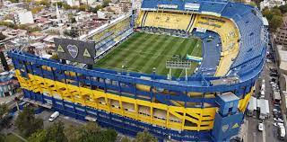
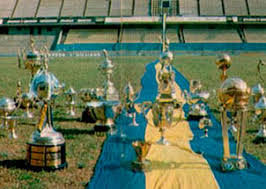
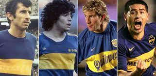

UN POCO DE LO QUE ES BOCA

Hernán Crespo: "Cuando dicen que la Bombonera tiembla, es verdad".

Boca Juniors ha ganado veintidós títulos internacionales, de los cuales dieciocho
son reconocidos por CONMEBOL/FIFA: La Copa Intercontinental en 1977, 2000 y 2003; la Copa Libertadores de América
en 1977, 1978, 2000, 2001, 2003 y 2007; la Copa Sudamericana en 2004 y 2005; la Recopa Sudamericana en 1990, 2005, 2006, y 2008; la Supercopa Sudamericana en 1989; la Copa Máster de Supercopa en 1992; y la Copa de Oro Nicolás Leoz en 1993. También ganó cuatro títulos reconocidos por AFA/AUF: la Cup Tie Competition en 1919; la Copa de Honor Cousenier en 1920; y la Copa de Confraternidad
Escobar-Gerona en 1945 y 1946, siendo así uno de los clubes más laureados del fútbol mundial.

Los 10 mejores jugadores de boca Juniors
1. JUAN ROMÁN RIQUELME (1996 – 2002/2007/2008 – 2014)
2. DIEGO MARADONA (1981/1995 – 1997)
3. MARTÍN PALERMO (1997 – 2000, 2004 – 2011)
4. CARLOS TEVEZ (2001 – 2004; 2015 – 2016; 2018 – 2021)
5. ÁNGEL CLEMENTE ROJAS (1963 – 1972)
6. FRANCISCO VARALLO (1931 – 1939)
7. GUILLERMO BARROS SCHELOTTO (1997 – 2007)
8. JORGE BERMÚDEZ (1997 – 2001)
9. HUGO GATTI (1976 – 1988)
10. ANTONIO RATTÍN (1956 – 1970)
♦inicio